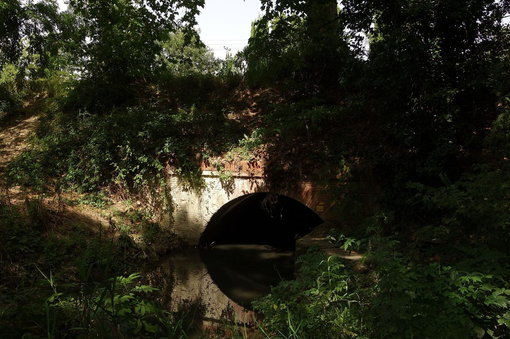

This stream is sick.
Nobody knows.
Because nobody has ever
really looked at it.
really looked at it.
A real urban stream, Toulouse · photo CC BY-SA, Wikimedia Commons
StreamChart
Every patient has a chart.
Now every stream does.
Now every stream does.